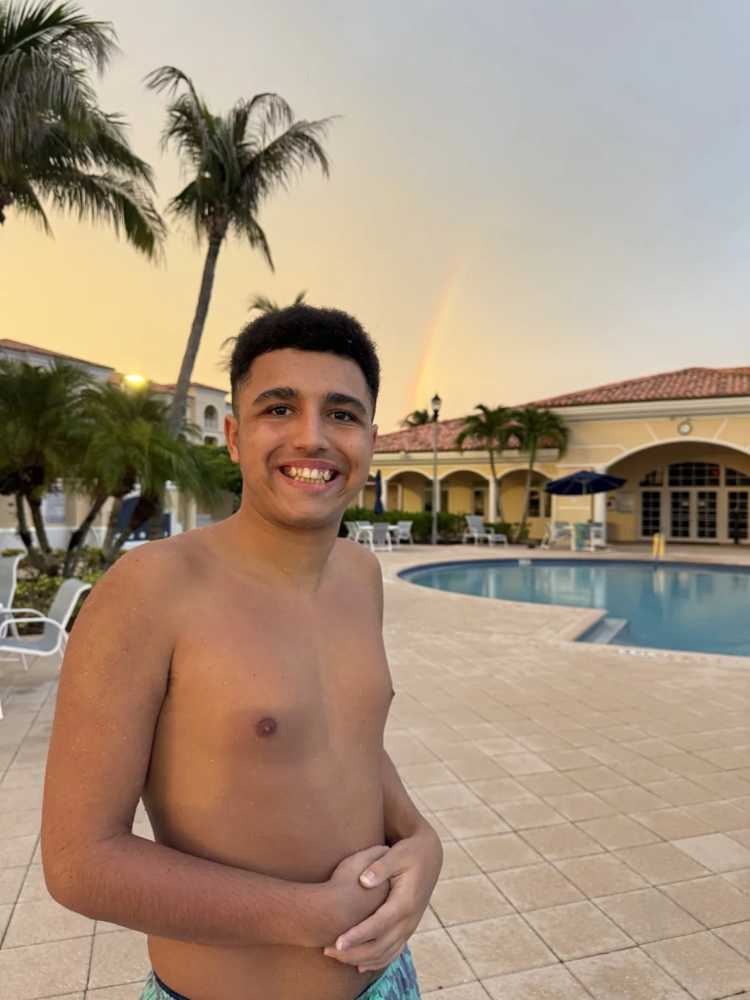
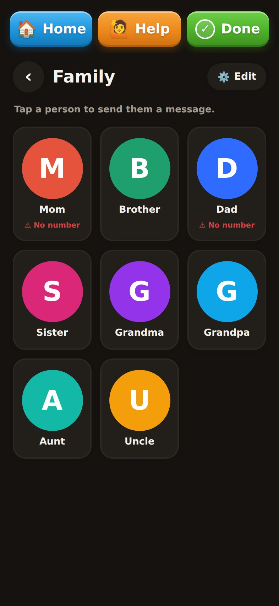

The tricycle
A standard bicycle setup was too unstable for Evan, so Frank had a tricycle built that worked for him. The goal was not to prove he could ride the standard bike. The goal was to let him ride.
The point is not to copy Evan. The point is to learn how to study your own child differently.
A standard bicycle setup was too unstable for Evan, so Frank had a tricycle built that worked for him. The goal was not to prove he could ride the standard bike. The goal was to let him ride.

The larger lesson is the same one behind EZvoxa: if the tool does not fit the child, do not automatically make the child the problem.
When the beach or pool is not possible, movement is part of Evan’s everyday joy. The site should make room for the whole person, not only the skills everyone is trying to improve.
Watch what settles them. What pulls them back. What gives them room to simply be.
Photos, avatars, emojis, custom phrases and familiar people are not decoration. They are the pieces a nonverbal user can use to build their own communication system.
See customization